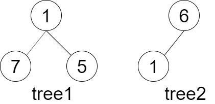
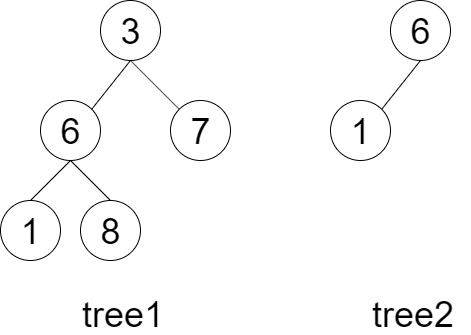

剑指 Offer 26. 子结构判断
双递归：isSub 在 A 里为 B 找同根起点，match 从起点逐结点比对；B 为空算匹配完，A 为空不算。
思路
- 外层
isSub(A,B)：A、B有一个为空直接false（空树不算子结构）；否则match(A,B)，或在A.left/A.right上继续找起点。 - 内层
match(a,b)：b为空说明 B 比完了 →true（A 对应位置多出的子树不影响）；a为空或值不等 →false。 - 匹配时两棵树同步往左右孩子走，结构和取值都要一致。
图解
最优解
1class Solution {2 public boolean isSubStructure(TreeNode A, TreeNode B) {3 // 空树不算任何树的子结构：有一边是空就直接 false4 if (A == null || B == null) return false;5 // B 先从 A 当前结点开始匹配；不行就到 A 的左右子树里继续找同根起点6 return match(A, B) || isSubStructure(A.left, B) || isSubStructure(A.right, B);7 }8 9 /** B 是否与「以 a 为根的这一段」完全同构；B 的空位不限制 A。 */10 private boolean match(TreeNode a, TreeNode b) {11 if (b == null) return true;12 if (a == null || a.val != b.val) return false;13 return match(a.left, b.left) && match(a.right, b.right);14 }15}题目
给定两棵二叉树 tree1 和 tree2，判断 tree2 是否以 tree1 的某个节点为根的子树具有 相同的结构和节点值 。
注意，空树 不会是以 tree1 的某个节点为根的子树具有 相同的结构和节点值 。
示例 1：

输入：tree1 = [1,7,5], tree2 = [6,1] 输出：false 解释：tree2 与 tree1 的一个子树没有相同的结构和节点值。
示例 2：

输入：tree1 = [3,6,7,1,8], tree2 = [6,1] 输出：true 解释：tree2 与 tree1 的一个子树拥有相同的结构和节点值。即 6 - > 1。
提示：
0 <= 节点个数 <= 10000
题面取自力扣当前版本。
数据快照 2026-11-04。题面版权归力扣所有，本站点仅供本人学习使用，请勿对外发布。